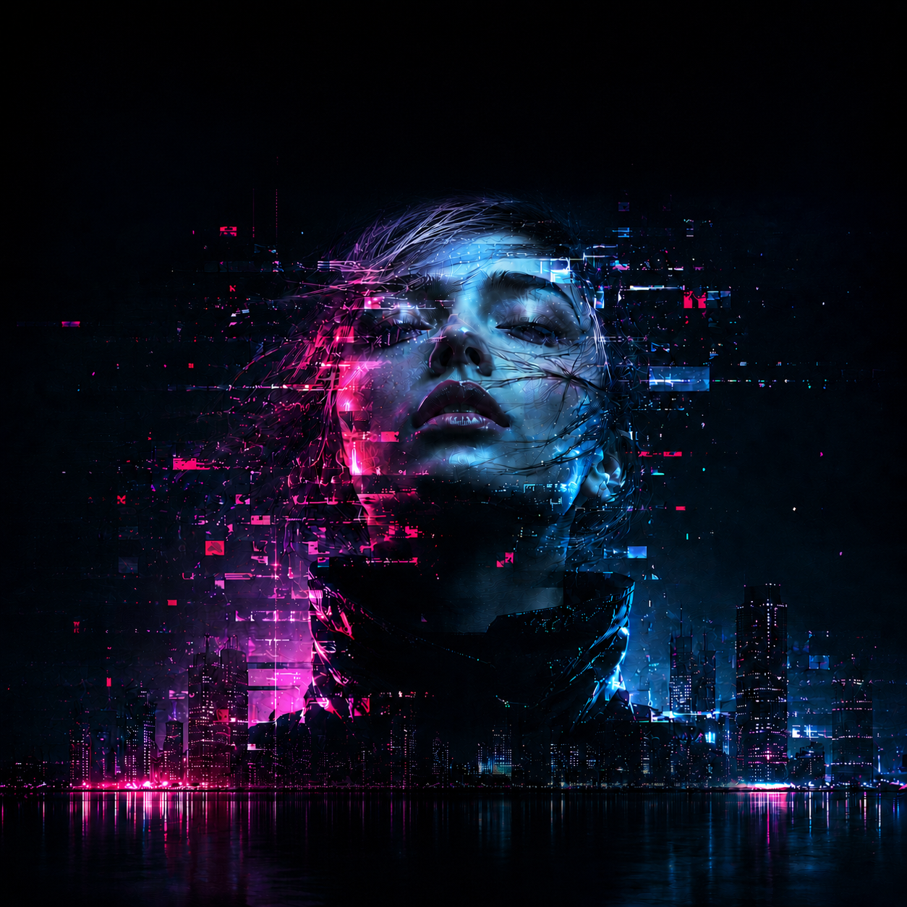
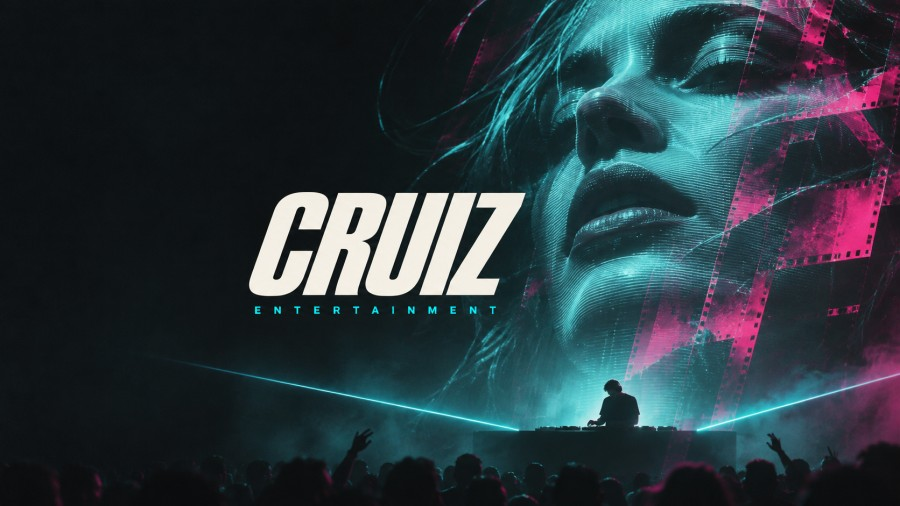

Musik
VYBE
En musikvisualiserare där ljudet från en lokal fil styr grafiken.

Musik
En musikvisualiserare där ljudet från en lokal fil styr grafiken.
Streaming
Tre scener för Streamlabs med neonporträtt, rörlig bakgrund och en ram för livesändningen.
Video
Ett tolv sekunder långt intro byggt i React och Remotion.

Bakgrund för Windows
Låt skrivbordet följa musiken. Visa låttitel, artist och skivomslag medan ljuset rör sig över scenen. Välj färg, ljusstyrka och ljudkänslighet i Lively.
Öppna Lively och dra in hela ZIP-filen i biblioteket. Välj Cruiz Afterhours för att aktivera bakgrunden. Högerklicka på temat och välj Anpassa för att ändra inställningarna.